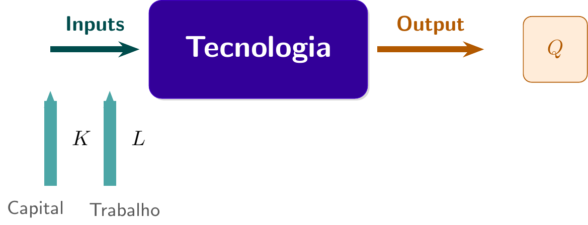
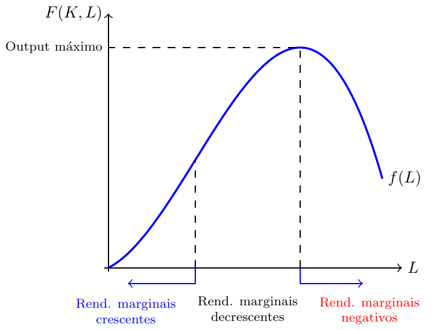

Microeconomia
Produção: Curto vs. Longo Prazo, Função de Produção
1 Teoria do Produtor
2 Modelo de Produção
Uma unidade produtiva contrata inputs no mercado de fatores e, usando uma tecnologia, transforma-os em output.
3 Escolhas da Empresa
São escolhas da empresa:
- Quantidade de cada input a contratar, em função dos respetivos preços de mercado.
- Quantidade de output a produzir, em função das condições de mercado e da tecnologia disponível.
4 Linguagem
\[F(K,L)=Q \quad \text{(Função de Produção)}\]
Relação entre quantidade de inputs e quantidade de output que a partir deles se obtém, dada uma tecnologia.
\[CT = C(Q) \quad \text{(Função de Custos)}\]
Relação entre custos de contratação de inputs e quantidade de output produzido, dada uma tecnologia.
5 Função de Produção
Uma função de produção mostra o produto máximo que se pode obter através de combinações alternativas de fatores produtivos, dada uma certa tecnologia.
Pressupõe-se eficiência na utilização de recursos.
Notação: \(F(K,L) = Q\), em que \(K\) é o capital e \(L\) é o trabalho.
6 Curto Prazo vs. Longo Prazo
- Uma empresa tem de decidir: quantidade a produzir, localização, equipamentos a instalar, pessoal a contratar…
- Estas decisões são tomadas em períodos de tempo diferentes: é mais rápido contratar trabalhadores do que adquirir instalações.
7 Curto Prazo (conceito)
Normalmente, considera-se que o Capital (\(K\)) está fixo a curto prazo.
8 Longo Prazo (conceito)
- É neste contexto que se enquadram as planificações de produção para o futuro: área de produção, linhas de produto, maquinaria/tecnologia…
9 “Quanto Tempo tem o Tempo?”
Longo Prazo e Curto Prazo são apenas conceitos.
A duração necessária depende do sector de atividade.
Um mês pode ser suficiente para substituir toda a maquinaria de uma fábrica têxtil, mas não para o fazer numa fábrica de microcomponentes eletrónicos. O “longo prazo” pode demorar mais nalguns sectores do que noutros.
10 Fatores Fixos e Variáveis
| Curto Prazo | Longo Prazo | |
|---|---|---|
| Capital (\(K\)) | Fixo (\(\bar{K}\)) | Variável |
| Trabalho (\(L\)) | Variável | Variável |
Nos modelos seguintes, considera-se \(L\) variável e \(K\) fixo a curto prazo: \[F(\bar{K}, L) = f(L) \quad \text{(curva de produto total)}\]
11 Produto Marginal do Trabalho (MPL)
Traduz a forma como a produção se altera (\(\Delta Q\)) quando o input variável se altera (\(\Delta L\)):
\[Pmg = MPL = \frac{\Delta Q}{\Delta L}\]
É a variação do produto total quando se adiciona uma unidade adicional de trabalho, cæteris paribus (mantendo \(K\) constante).
12 Produto Médio do Trabalho (APL)
É a quantidade produzida, em média, por cada unidade de trabalho contratada:
\[PMe = APL = \frac{Q}{L}\]
Uma “unidade de trabalho” pode ser uma pessoa, grupos de pessoas, ou uma unidade de tempo (horas, dias…).
13 Exemplo Numérico: APL e MPL
| \(L\) | \(F(K,L)\) | \(APL\) | \(MPL\) |
|---|---|---|---|
| 0 | 0 | — | — |
| 1 | 4 | 4.00 | 4 |
| 2 | 14 | 7.00 | 10 |
| 3 | 27 | 9.00 | 13 |
| 4 | 43 | 10.75 | 16 |
| 5 | 58 | 11.60 | 15 |
| 6 | 72 | 12.00 | 14 |
| 7 | 81 | 11.57 | 9 |
| 8 | 86 | 10.75 | 5 |
| 9 | 78 | 8.67 | -8 |
| 10 | 67 | 6.70 | -11 |
- MPL máximo: \(L=4\)
- Quando \(MPL > APL\): APL está a crescer; quando \(MPL < APL\): APL está a diminuir. APL máximo \(\to\) ótimo técnico.
14 Curva de Produto Total

15 APL e MPL — Curva Geral

16 As 3 Etapas do Processo Produtivo
| Etapa | Intervalo | Característica |
|---|---|---|
| I | \([0,\, Q_1]\) | \(MPL > APL\); APL crescente |
| II | \([Q_1,\, Q_{max}]\) | \(MPL < APL\); APL decrescente; \(MPL \geq 0\) |
| III | \(Q > Q_{max}\) | \(MPL < 0\); produção decresce |
17 Exemplos de Funções de Produção
Funções de produção podem ter formas analíticas muito diversas:
- \(Q = 2KL\) → a curto prazo (\(K=2\)): \(Q = 4L\)
- \(Q = K^{0.25}L^{0.5}\) → a curto prazo (\(K=16\)): \(Q = 2L^{0.5}\)
- \(Q = K^{0.5}L^{0.5}\) → a curto prazo (\(K=4\)): \(Q = 2L^{0.5}\)
- \(Q = -K^3L^3 + 30K^4L^2 + 10K^5L\) → a curto prazo (\(K=1\)): \(Q = -L^3 + 30L^2 + 10L\)
Cada expressão representa um diferente modelo de tecnologia.
18 Produção a Longo Prazo: Efeito de \(\uparrow K\)
Um aumento de \(K\) expande a curva de produto total — efeito análogo ao de um progresso tecnológico.
19 Exercícios — Escolha Múltipla (1)
1. A empresa A tem a função \(Q = K^{0.5}L^{0.5}\) e a empresa B tem \(Q = KL\). A curto prazo (\(K=4\)):
- A empresa A tem MPL crescente e a empresa B tem MPL constante.
- A empresa A tem MPL decrescente e a empresa B tem MPL crescente.
- A empresa A tem MPL decrescente e a empresa B tem MPL constante.
- Ambas têm MPL decrescente.
Solução: A (\(K=4\)): \(Q=2L^{0.5}\), \(MPL = L^{-0.5}\) → decresce com \(L\). B (\(K=4\)): \(Q=4L\), \(MPL = 4\) → constante. Resposta: c).
20 Exercícios — Escolha Múltipla (2)
2. Qual das seguintes afirmações sobre a Zona Económica de Exploração é correta?
- Corresponde à Etapa I, onde APL está a crescer.
- Corresponde à Etapa II, onde \(MPL \geq 0\) e APL está a decrescer.
- Corresponde à Etapa III, onde o output é máximo.
- É onde o MPL é máximo.
Solução: b), por definição.
21 Exercício de Desenvolvimento
Enunciado: Considere a função de produção \(Q = -KL^3 + 30K^2L^2 + 10L\), com \(K=1\) fixo.
Calcule \(MPL\) e \(APL\). A partir de que valor de \(L\) se verificam rendimentos marginais decrescentes?
Delimite as três etapas do processo produtivo e identifique a Zona Económica de Exploração.
22 Solução — Desenvolvimento (a)
\[MPL = \frac{dQ}{dL} = -3L^2 + 60L + 10\]
\[APL = \frac{Q}{L} = -L^2 + 30L + 10\]
Rendimentos marginais decrescentes quando \(\frac{d(MPL)}{dL} < 0\): \[\frac{d(MPL)}{dL} = -6L + 60 = 0 \Rightarrow L = 10\]
Para \(L > 10\): rendimentos marginais decrescentes.
23 Solução — Desenvolvimento (b)
Etapa I → II: \(MPL = APL\)
\[-3L^2 + 60L + 10 = -L^2 + 30L + 10\] \[-2L^2 + 30L = 0 \Rightarrow L(-2L + 30) = 0 \Rightarrow L = 15\]
Etapa II → III: \(MPL = 0\)
\[-3L^2 + 60L + 10 = 0 \Rightarrow L \approx 20.16\]
| Etapa | Intervalo em \(L\) |
|---|---|
| I | \([0,\; 15[\) |
| II (Zona Econ.) | \([15,\; 20.16]\) |
| III | \(]20.16,\; +\infty[\) |